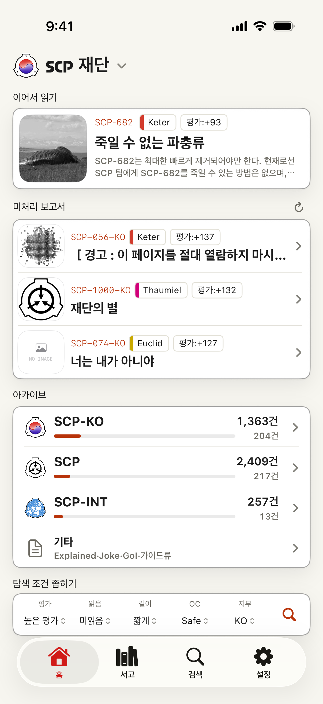
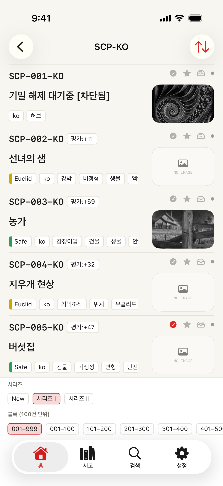
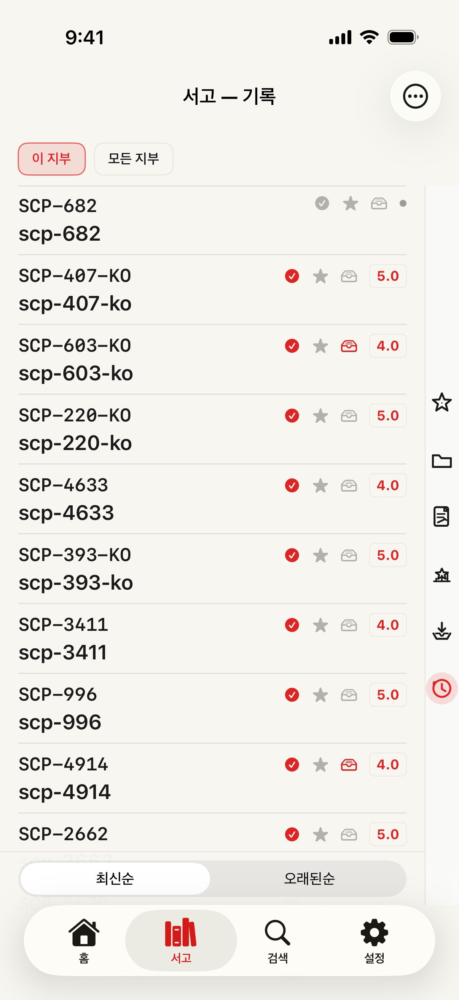
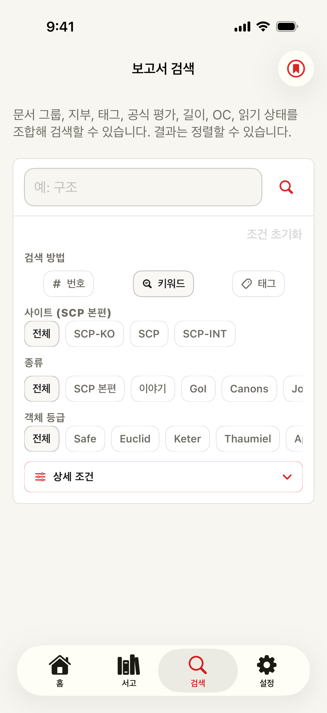

기능 개요
보고서를 찾고, 나중에 제대로 돌아오기
SCP Docs는 아카이브 진입점, 검색, 리더 조작, 개인 읽기 상태를 하나의 네이티브 iOS 앱에 모읍니다. 최근 버전에서는 읽기뿐 아니라 발견, 저장, 듣기, 공유, 기록까지 다루는 작업 공간으로 확장되었습니다.

스크린샷
흐름에 맞춘 화면



아카이브와 라이브러리 흐름
아카이브 목록에서 개인 읽기 선반으로
홈을 아카이브 지도로 사용하기
- 지부 선택
- 영어, 일본어, 프랑스어, 러시아어, 한국어를 선택할 수 있습니다. 홈, 검색, 목록, 글 링크, 앱 언어가 선택한 지부의 문맥에 맞춰집니다.
- 디렉터리에서 시작
- SCP 글, Tales, Canons, Canon series, GoI, Joke SCP, SCP-EX, 컬렉션, 최근 글, 가이드류를 정확한 번호를 몰라도 탐색할 수 있습니다.
- 목표를 알 때는 검색
- 번호와 제목 검색은 무료로 사용할 수 있습니다. 프리미엄 고급 검색은 태그, Object Class, 본문, 메모, 읽기 상태, 공식 점수, 길이, 저장 조건까지 좁힐 수 있습니다.
탐색을 라이브러리 상태로 바꾸기
- 글 저장
- 북마크, 나중에 읽기, 평점, 메모를 사용하면 글이 단순한 페이지가 아니라 개인 읽기 선반에 남습니다.
- 문맥과 함께 이어 읽기
- 기록, 이어 읽기, 읽음 상태, 평점, 메모, 스크롤 위치로 같은 보고서나 시리즈에 다시 돌아갈 수 있습니다.
- 긴 읽기 정리
- 프리미엄에서는 저장 한도 확장, 북마크 폴더, 메모 편집, iCloud Drive 동기화, 대상 글 오프라인 저장을 사용할 수 있습니다.
사용 가이드
상황별로 사용할 곳
- 특정 글을 정하지 않고 탐색하고 싶을 때
- 홈에서 지부를 선택하고 SCP, SCP-INT, Stories, Others 같은 아카이브 경로를 엽니다. 카탈로그 화면에서는 시리즈와 번호 블록으로 이동하면서 제목, Object Class, 태그, 점수, 썸네일을 보고 찾을 수 있습니다.
- 번호, 제목, 태그, Object Class를 알고 있을 때
- 검색을 사용합니다. 번호와 제목 검색은 일반적으로 사용할 수 있고, 프리미엄 고급 필터는 문서 종류, 지부, 태그, 공식 점수, 길이, Object Class, 읽기 상태, 메모까지 좁힙니다.
- 나중에 다시 읽고 싶은 글을 찾았을 때
- 리더나 라이브러리에서 북마크, 나중에 읽기, 평점, 메모, 폴더로 저장합니다. 나중에는 기억이나 브라우저 기록에 의존하지 않고 라이브러리에서 찾을 수 있습니다.
- 시리즈를 중간에 멈췄을 때
- 이어 읽기, 라이브러리 기록, 저장된 스크롤 위치, 읽음 상태를 사용해 같은 보고서나 진행 상황으로 돌아갈 수 있습니다.
기능
주요 기능
Branches
영어, 일본어, 프랑스어, 러시아어, 한국어 아카이브
지부를 바꾸면 홈, 검색, 목록, 글 링크 대상, 앱 언어가 함께 바뀌어 각 아카이브의 문맥으로 읽을 수 있습니다.
Directories
더 정리된 아카이브 경로
SCP 글, Tales, Canons, Canon series, GoI, Joke SCP, SCP-EX, 컬렉션, 최근 글, 가이드와 관련 목록을 탐색합니다.
Search
빠른 무료 검색과 프리미엄 필터
SCP 번호로 바로 열고, 제목, 태그, Object Class로 찾을 수 있습니다. 프리미엄은 문서, 메모, 읽기 상태, 공식 점수, 길이, 저장 검색을 추가합니다.
Reader
집중할 수 있는 글 보기
타이포그래피 설정, 차분한 테마, 개선된 다크 모드, 맨 위로 이동, 오프라인 스냅샷, 특수 형식 페이지의 더 충실한 표시를 제공합니다.
Library
다시 돌아오기 위한 장소
기록, 읽음 상태, 평가, 북마크, 나중에 읽기, 스크롤 위치, 메모, 이어 읽기 데이터가 기기 안에서 정리됩니다.
Share
카드로 공유
글 하나 또는 직접 고른 목록을 X 등 소셜 앱에 공유하기 쉬운 카드로 만들 수 있습니다. 템플릿과 선택 코멘트를 지원합니다.
Premium
통계, 음성 읽기, 오프라인
읽기 통계, 텍스트 음성 변환, 메모 편집, 저장 한도 확장, 광고 제거, 오프라인 저장을 제공합니다.
Sync
iCloud 기반 개인 정리
사용 가능한 경우 읽기 상태, 메모, 저장 검색, 북마크 폴더가 사용자의 iCloud Drive를 통해 동기화됩니다. 저장 검색은 새 일치 항목을 기기 알림으로 알려 줄 수 있습니다.
Access tiers
무료와 프리미엄 비교
| 기능 | 무료 | 프리미엄 |
|---|---|---|
| 번호·제목 검색 | ✓ | ✓ |
| 아카이브 디렉터리와 카탈로그 탐색 | ✓ | ✓ |
| 기록·북마크·나중에 읽기·평점 | ✓ | ✓ |
| 리더 테마·타이포그래피·다크 모드 | ✓ | ✓ |
| 광고 | 표시 | 제거 |
| 저장 한도 | 기본 | 확장 |
| 고급 검색 필터 | — | ✓ |
| 메모 편집 | — | ✓ |
| 오프라인 스냅샷 | — | ✓ |
| 읽기 통계 | — | ✓ |
| 텍스트 음성 변환 | — | ✓ |
| 저장 검색과 새 항목 알림 | — | ✓ |
| 북마크 폴더와 iCloud 동기화 | — | ✓ |
프리미엄은 App Store의 자동 갱신 구독으로 제공됩니다. 제공되는 경우 리워드 광고로 구독 없이 임시 프리미엄을 이용할 수 있습니다.